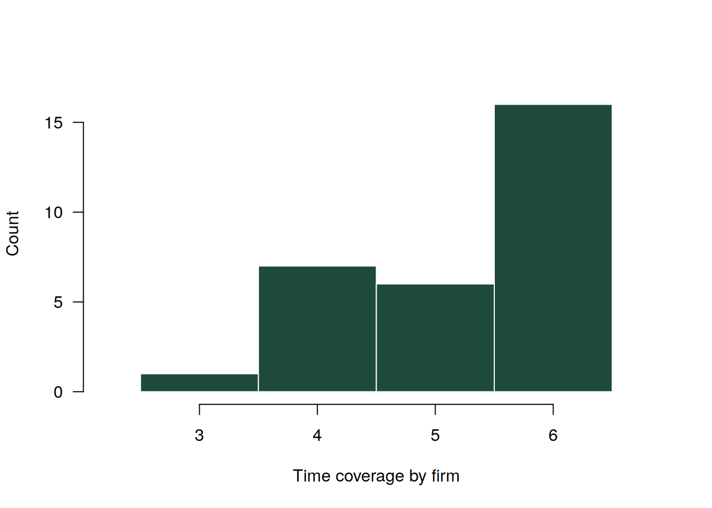
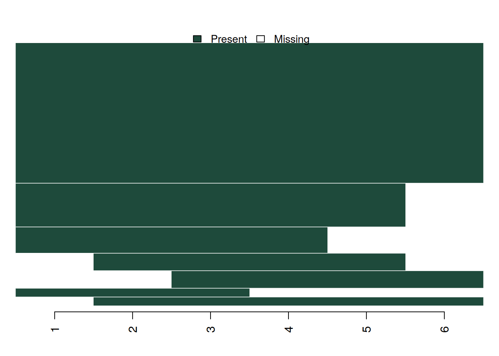
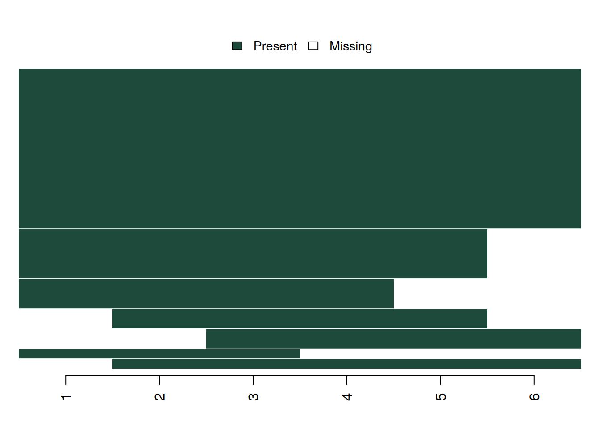
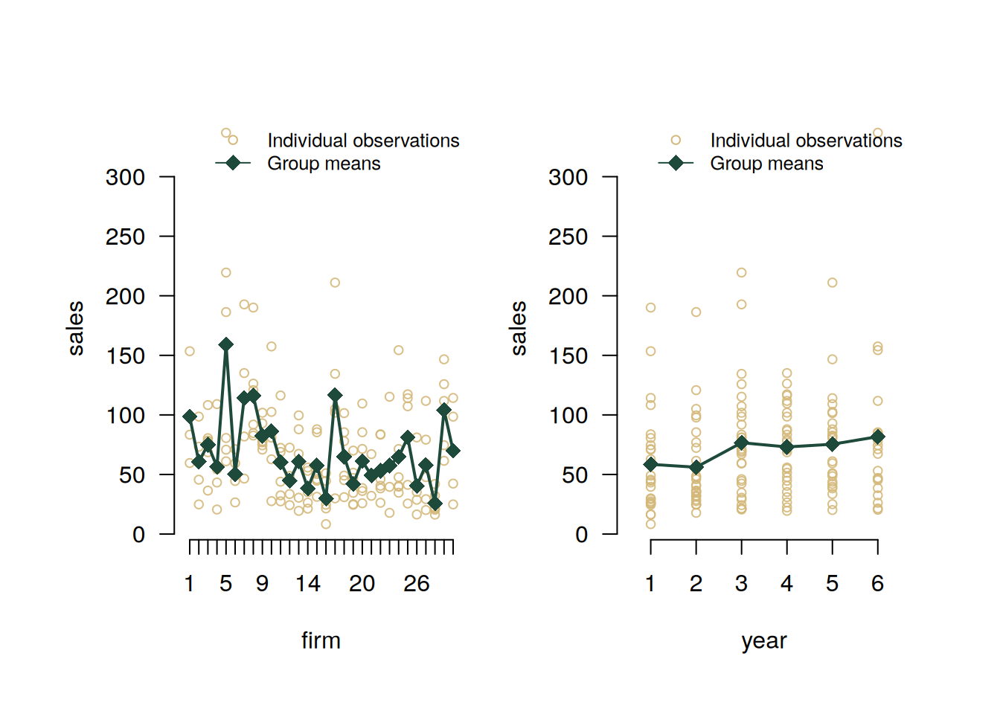

library(bamboo)4 Example with ‘panel_data’ object
4.1 Set up
4.2 Data import
data(production)
production <- make_panel(production, index = c("firm", "year"))4.3 Panel data structure analysis
describe_dimensions(production) dimension count
1 entities 30
2 periods 6
3 rows 180
4 variables 4describe_balance(production) dimension mean std min max
1 entities 26.167 3.971 19 30
2 periods 5.233 0.935 3 6describe_periods(production) year count share
1 1 25 0.833
2 2 28 0.933
3 3 30 1.000
4 4 29 0.967
5 5 26 0.867
6 6 19 0.633plot_periods(production)
describe_patterns(production) pattern 1 2 3 4 5 6 count share
1 1 1 1 1 1 1 1 16 0.533
2 2 1 1 1 1 1 0 5 0.167
3 3 1 1 1 1 0 0 3 0.100
4 4 0 0 1 1 1 1 2 0.067
5 5 0 1 1 1 1 0 2 0.067
6 6 0 1 1 1 1 1 1 0.033
7 7 1 1 1 0 0 0 1 0.033plot_patterns(production)
4.4 Missing values analysis
plot_missing(production)Analysing all variables: industry, sales, capital, labor
summarize_missing(production)Analyzing all variables: industry, sales, capital, labor variable na_count na_share entities periods
1 industry 23 0.128 14 5
2 sales 26 0.144 15 5
3 capital 26 0.144 17 5
4 labor 26 0.144 16 6describe_incomplete(production) firm na_count variables
1 23 12 4
2 21 9 4
3 1 8 4
4 2 8 4
5 6 8 4
6 7 8 4
7 12 8 4
8 26 8 4
9 25 5 4
10 30 5 4
11 4 4 4
12 13 4 4
13 17 4 4
14 29 4 4
15 8 2 2
16 3 1 1
17 10 1 1
18 14 1 1
19 24 1 14.5 Numeric variables analysis
summarize_numeric(production)Analyzing all numeric variables: sales, capital, labor variable count mean std min max
1 sales 154 69.756 46.804 8.321 336.853
2 capital 154 32.490 31.053 0.968 194.719
3 labor 154 79.329 73.687 4.097 419.848summarize_numeric(production, group = "year")Analyzing all numeric variables: sales, capital, labor year variable count mean std min max
1 1 sales 25 58.491 44.590 8.321 190.100
2 1 capital 24 24.862 16.273 0.968 65.950
3 1 labor 25 68.871 66.941 4.097 246.852
4 2 sales 28 56.099 37.944 17.803 186.349
5 2 capital 27 28.790 31.053 3.150 151.464
6 2 labor 27 60.463 48.484 11.692 222.761
7 3 sales 30 76.660 47.574 20.580 219.513
8 3 capital 30 35.464 39.174 4.729 194.719
9 3 labor 29 90.437 82.628 9.284 414.844
10 4 sales 28 73.104 33.238 19.455 135.118
11 4 capital 29 44.522 35.375 5.080 132.898
12 4 labor 29 73.967 54.005 16.327 240.726
13 5 sales 24 75.398 43.091 20.161 211.092
14 5 capital 25 28.351 23.127 5.339 86.078
15 5 labor 26 90.604 85.026 21.063 413.784
16 6 sales 19 81.744 73.320 20.352 336.853
17 6 capital 19 29.767 30.908 2.288 108.787
18 6 labor 18 96.609 103.777 20.507 419.848plot_heterogeneity(production, select = "sales")
decompose_numeric(production)Analyzing all numeric variables: sales, capital, labor variable dimension mean std min max count
1 sales overall 69.756 46.804 8.321 336.853 154.000
2 sales between NA 29.776 25.772 159.197 30.000
3 sales within NA 35.862 -28.397 247.412 5.133
4 capital overall 32.490 31.053 0.968 194.719 154.000
5 capital between NA 13.969 8.671 75.083 30.000
6 capital within NA 27.701 -22.444 152.126 5.133
7 labor overall 79.329 73.687 4.097 419.848 154.000
8 labor between NA 44.023 24.606 175.731 30.000
9 labor within NA 59.561 -77.709 323.445 5.1334.6 Factor variables analysis
decompose_factor(production)Analyzing all factor variables: industry variable category count_overall share_overall count_between share_between
1 industry Industry 1 63 0.401 13 0.433
2 industry Industry 2 45 0.287 11 0.367
3 industry Industry 3 49 0.312 10 0.333
share_within
1 0.918
2 0.809
3 0.917summarize_transition(production, select = "industry")23 rows with NA values in 'industry' removed. from_to Industry 1 Industry 2 Industry 3
1 Industry 1 1 0.054 0.000
2 Industry 2 0 0.919 0.025
3 Industry 3 0 0.027 0.975